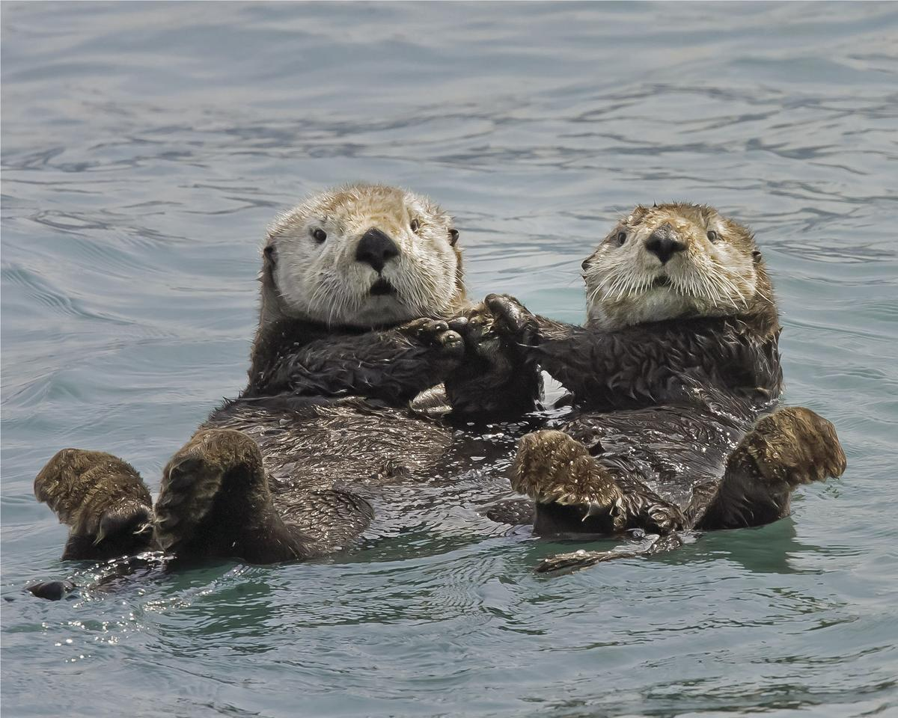

| Rank #1: Otters |
|
|---|---|
|  | Did you know that otters hold hands when they sleep so that they don't drift away from eachother? This is why they are holding hands in this picture! |
| Rank #2: Orange Tabby Cats |
|
|---|---|
 |
There are many different breeds of cats with their own unique markings and fur colors. I am a cat person and have always had a soft spot for orange tabbys. |
| Rank #3: Geckos |
|
|---|---|
 |
Back in elementary school, we did a research project and mine was on geckos. I instantly fell in love with the adorable little lizards, and I have always wanted one. |